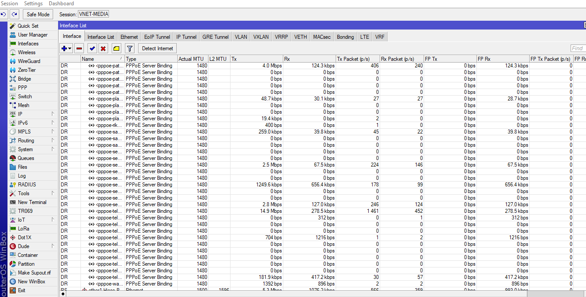

VNET-MEDIA
VNET-MEDIA
VNET-MEDIA: Solusi Jaringan & Keamanan Profesional untuk Seluruh Indonesia
VNET-MEDIA adalah penyedia layanan IT terkemuka yang berdedikasi untuk memenuhi kebutuhan **jaringan dan keamanan** Anda. Kami ahli dalam **Pasang CCTV**, **Setting Mikrotik**, **Konfigurasi OLT**, dan **VPN Remote**, siap melayani klien di seluruh **Indonesia**, termasuk kota-kota besar seperti **Surabaya, Jakarta, Jombang, Kediri, Jember, Banyuwangi, Denpasar, Lombok**, dan banyak lagi.

Mengapa Memilih Kami?
Kenapa VNET MEDIA Mitra Terbaik Anda?

100+
Jumlah Pelanggan Puas
99.9%
Transaksi Sukses
99.9%
After-Sales Service Terbaik
4+
Tahun Beroperasi & Berpengalaman
Keunggulan Kami
Fitur Unggulan VNET-MEDIA
Kami menawarkan berbagai fitur dan keuntungan yang membuat layanan kami menjadi pilihan terbaik untuk Anda.

Teknisi Profesional & Berpengalaman
Didukung oleh tim teknisi yang ahli dan berpengalaman di bidangnya.
After Sales Service Prima
Dapatkan konsultasi dan dukungan gratis untuk setiap keluhan setelah pemasangan.
Harga Fleksibel & Kompetitif
Kami menawarkan harga yang bisa disesuaikan dengan kebutuhan dan anggaran Anda (syarat & ketentuan berlaku).
Keamanan Terjamin
Solusi jaringan dan keamanan kami dirancang untuk melindungi data dan aset Anda.

Jasa yang Kami Sediakan
Layanan Unggulan Kami
VNET-MEDIA menawarkan berbagai solusi IT dan jaringan yang komprehensif untuk memenuhi kebutuhan Anda.
Setting Router Jaringan
Konfigurasi Mikrotik, Cisco, Juniper, Ubiquiti, dan perangkat jaringan lainnya untuk performa optimal.
...pelajari lebih lanjut
Proyek CCTV (Home & Smart City)
Solusi pemasangan CCTV untuk rumah, kantor, hingga proyek pengawasan kota pintar.
...pelajari lebih lanjut
Pembangunan & Konfigurasi OLT
Jasa profesional untuk perencanaan, instalasi, dan konfigurasi Optical Line Terminal (OLT) pada jaringan fiber optik.
...pelajari lebih lanjut
MANAGE SERVICE & NOC
Layanan pengelolaan dan pemantauan sistem IT setelah instalasi, baik dari kami maupun di luar pembangunan.
...pelajari lebih lanjut
Proyek Pembangunan Server
Perencanaan dan pembangunan infrastruktur server dari nol sesuai kebutuhan bisnis Anda.
...lebih lanjut
Pertanyaan Umum
Frequently Asked Questions (FAQ)
Temukan jawaban atas pertanyaan yang sering diajukan mengenai layanan VNET-MEDIA.

Hubungi Kami
Tidak Dapat Menemukan Jawaban yang Anda Butuhkan?
Jangan ragu untuk menghubungi kami. Tim kami akan segera merespons dengan solusi terbaik untuk masalah atau pertanyaan Anda.